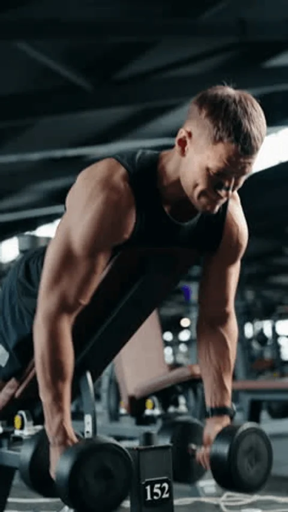

IRON LEGACY
01 / El Templo de la Disciplina
El gimnasio representa el verdadero santuario del esfuerzo físico y el crecimiento mental. No se trata simplemente de levantar barras y mancuernas por vanidad, sino de un proceso riguroso de reconstrucción personal. Al someter los músculos a una tensión mecánica demandante, el cuerpo se ve obligado a adaptarse y volverse más fuerte. Desarrollar esta constancia diaria forja un carácter inquebrantable capaz de afrontar cualquier reto cotidiano.
02 / Planificación de Carga: PPL x Arnold Split
Esta distribución de entrenamiento combina dos de las metodologías más efectivas para la ganancia de masa muscular y fuerza en atletas naturales. La primera mitad de la semana se enfoca en la funcionalidad del empuje, tirón y pierna, garantizando un reclutamiento completo. La segunda mitad cambia al esquema clásico de Arnold, priorizando el volumen antagonista y la congestión pura para maximizar las proporciones estéticas.
| DÍA | ENFOQUE DE LA SESIÓN | SISTEMA |
 |
| Lunes | Pecho, Hombro y Tríceps | Ver Ejercicios | |
| Martes | Espalda y Bíceps | Ver Ejercicios | |
| Miércoles | Pierna Completa (Cuádriceps) | Ver Ejercicios | |
| Jueves | Pecho y Espalda (Antagonista) | Ver Ejercicios | |
| Viernes | Brazo Completo (Bíceps/Tríceps) | Ver Ejercicios | |
| Sábado | Descanso y Recuperación Nerviosa | Ver Descanso | |
| Domingo | Pierna Enfoque Posterior (Femoral) | Ver Ejercicios |
03 / Nutrición y Suplementación Científica
El esfuerzo realizado bajo los términos del entrenamiento pesado queda completamente desperdiciado si el cuerpo no recibe los bloques de construcción necesarios. El desarrollo muscular depende estrictamente de un superávit calórico controlado y un consumo óptimo de proteínas para reparar los tejidos. Complementar este esquema con suplementos validados como la creatina monohidratada y los aminoácidos acelera drásticamente la recuperación energética celular.
👉 Acceder al Plan de Macronutrientes y Suplementos
04 / Récords Personales e Indicadores de Progreso
Para garantizar que el cuerpo continúe evolucionando, es obligatorio llevar un registro estricto de las cargas levantadas en los movimientos principales. Aplicar los principios de la sobrecarga progresiva significa aumentar el peso o el número de repeticiones de forma sistemática semana tras semana. Registrar tus marcas en ejercicios clave te permite medir con precisión matemática el incremento real de tus capacidades físicas.

COMENTARIOS |
IRON LEGACY PLATFORM © 2026